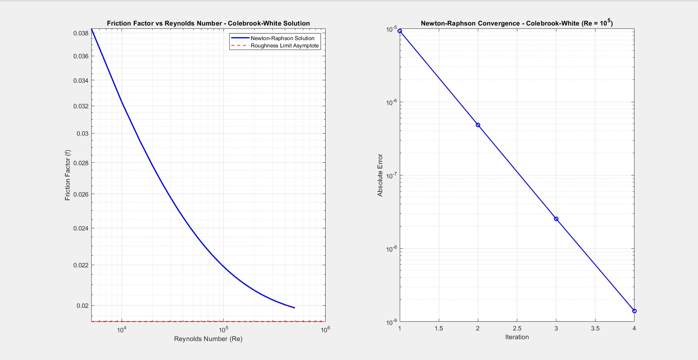

Colebrook-White
Pipe Flow Solver
Independent Project · MATLAB
01 — Problem
The Challenge
The Colebrook-White equation is the industry-standard implicit formula for computing the Darcy-Weisbach friction factor in turbulent pipe flow. Because it is implicit, i.e. the friction factor appears on both sides, therefore, it cannot be solved analytically. The goal was to implement a robust iterative numerical solver and use it to compute full pipe flow characteristics across a turbulent velocity range.
02 — Implementation
Technical Approach
The solver was implemented across three MATLAB files with distinct responsibilities:
- colebrookFunction.m — Core Newton-Raphson solver. Uses the Swamee-Jain explicit approximation as the initial guess to accelerate convergence. Includes tolerance control, maximum iteration limits, and convergence tracking per iteration.
- index.m — Velocity sweep across the turbulent flow regime. Applies Darcy-Weisbach to compute pressure drop and head loss at each velocity. Generates a Moody chart validation plot with roughness asymptote and a Newton-Raphson convergence subplot.
- solvePipe.m — Interactive command-line tool. Prompts for pipe geometry and fluid properties, then outputs Reynolds number, flow regime classification, friction factor, pressure drop, and head loss.

Colebrook solver output graphs
03 — Results
Outcomes
3
validated output modules
✓
Moody chart validation confirmed
NR
Newton-Raphson with convergence tracking
Results validated against known Moody chart values across the turbulent regime. The solver converges reliably from the Swamee-Jain initial guess within a small number of iterations for all tested conditions.
04 — Tools
Tools & Methods
MATLAB
Newton-Raphson
Colebrook-White Equation
Darcy-Weisbach
Moody Chart
Swamee-Jain Approximation